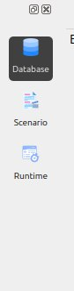
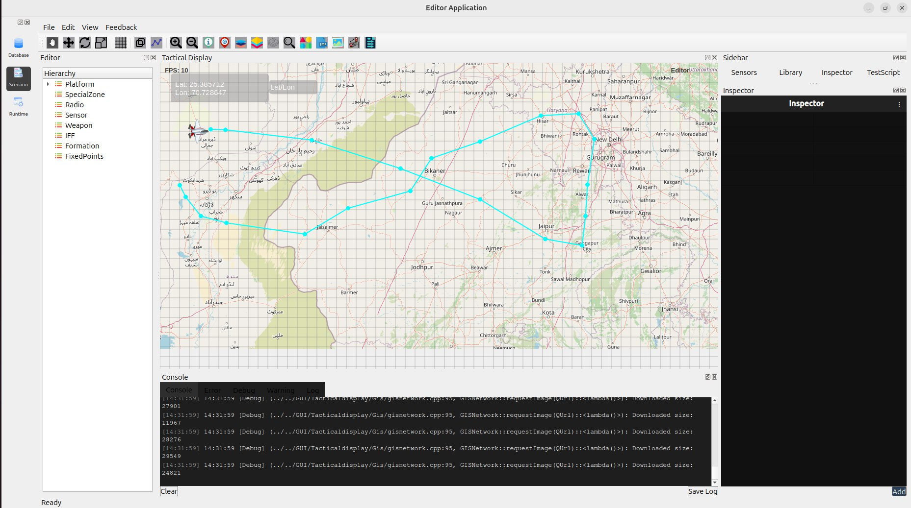
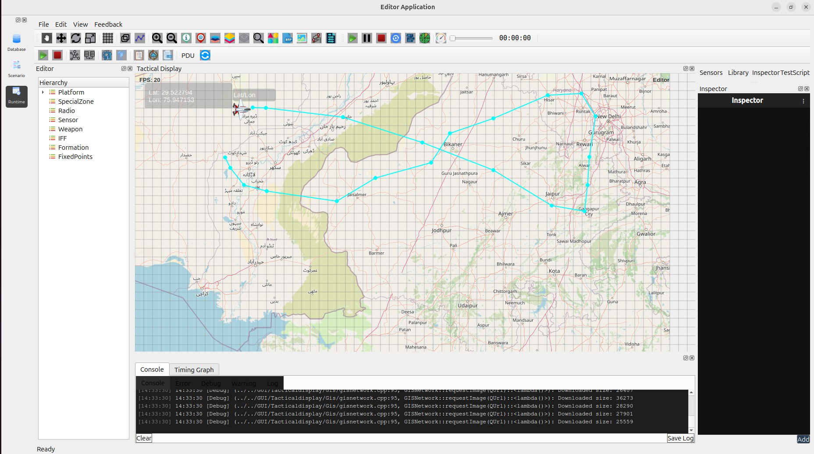
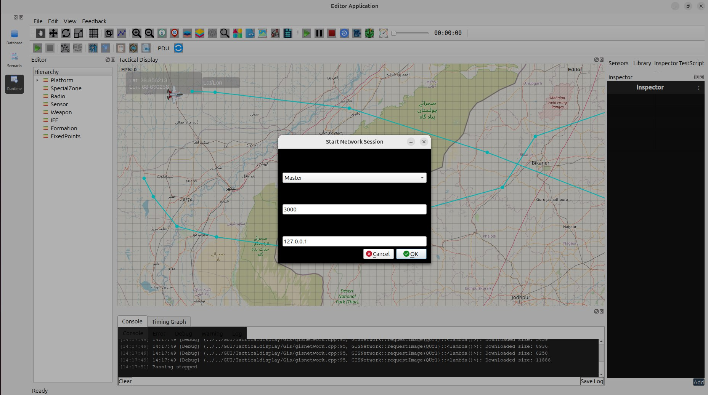
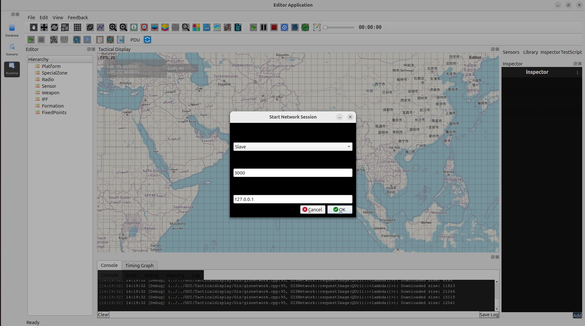

Network Module
The Network module enables multi-system synchronized simulation, where one machine operates as the Master and additional machines connect as Slaves.
When a Slave connects, it automatically receives the complete scenario state from the Master, including:
Folders
Entities
Scenario initialization
Runtime updates
All simulation updates performed on the Master are broadcast to all connected Slaves in real time.
Note: Network settings apply only to the scenario currently running in the Runtime environment.
Setting Up a Network Session
1. Load the Database
Before starting a network session, load the required database.
Steps:
Open the Database Editor.
Load or edit the database as needed.
Switch to the Scenario module.

2. Load or Create a Scenario
You may either:
Create a new scenario in the Scenario Editor OR
Load an existing scenario
Important — Save the Scenario
Before switching to Runtime, save your scenario:
File → Save Scenario or
Use the Save button in the toolbar
This ensures that the Runtime environment loads the correct scenario.

3. Switch to Runtime
Click the Runtime tab.
The scenario will load into the Runtime environment.
Runtime supports simulation execution and network synchronization.

4. Start as Master
On the machine that will control the simulation:
Open the Start Network Session dialog.
Set Role = Master.
Enter the Port (e.g., 3000).
Enter the IP address to listen on (e.g., 127.0.0.1).
Click OK.
What happens now:
The Master begins listening for Slave connections.
Master becomes the authoritative controller of the simulation.

5. Start as Slave
On the second machine (or another instance):
Open the Start Network Session dialog.
Set Role = Slave.
Enter the same Port used by the Master.
Enter the Master’s IP address.
Click OK.
Upon successful connection, the Slave automatically receives:
Folders
Entities
Scenario configuration
Runtime instances
The Slave display becomes fully synchronized with the Master simulation.

6. Run the Simulation
Once the Slave is connected:
Start the simulation from the Master.
All movements, updates, and runtime actions are immediately reflected on the Slave.
The Slave cannot control the simulation — it only mirrors the Master.
Network Workflow Summary
Step |
Action |
Performed On |
|---|---|---|
1 |
Load Database |
Database Editor |
2 |
Load / Create Scenario |
Scenario Editor |
3 |
Switch to Runtime |
Runtime Tab |
4 |
Start as Master |
Machine A |
5 |
Start as Slave |
Machine B |
6 |
Run Simulation |
Master Only |